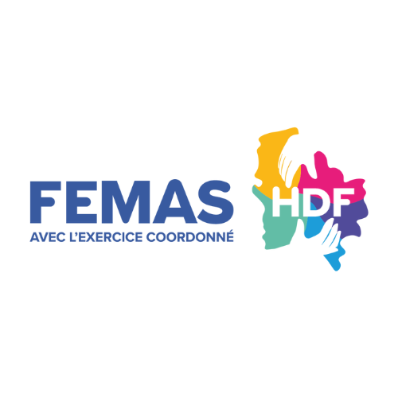

Salle d’attente
L’affiche usagers
À afficher dans votre maison de santé pour ouvrir la discussion.
⬇ Télécharger PNG
Programme ↗🎉 Journée régionale · 27 novembre 2026
Un kit prêt à diffuser pour inviter les patients de votre maison de santé à partager la journée avec votre équipe.
Important : l’usager s’inscrit en passant par votre MSP. Indiquez sur chaque support un contact de votre équipe (nom, téléphone ou e-mail). C’est cette personne qui recueille les inscriptions des usagers et organise leur venue.
avant la Journée régionale
Facile à utiliser
Affiche, réseaux sociaux, story ou écran de salle d’attente.
Voir les supports →Ajoutez le nom de votre MSP et la personne à contacter pour s’inscrire sur le courrier et les textes.
Le courrier →Votre contact recueille les demandes, inscrit les usagers et organise avec eux le déplacement à Lille.
Le programme ↗Les supports
Cliquez sur un visuel pour l’agrandir, puis téléchargez le format qui vous convient.
À afficher dans votre maison de santé pour ouvrir la discussion.
⬇ Télécharger PNGPour vos publications, avec le texte prêt à copier.
⬇ Télécharger PNGPour une invitation courte sur vos réseaux sociaux.
⬇ Télécharger PNGÀ intégrer à la boucle de diffusion de vos écrans.
⬇ Télécharger PNGPersonnalisez le courrier avec votre logo, votre signature et le contact à qui l’usager s’adresse pour s’inscrire, puis imprimez-le ou envoyez-le.
Lire le courrier ↗ · Le document reste modifiable dans Word.
Les mots pour inviter
✨ Gagnez du temps : renseignez vos infos, les textes se complètent tout seuls. Le contact est indispensable : c’est par lui que les usagers s’inscrivent.
Et si vous veniez avec nous ? 👥
Vous êtes patient de notre maison de santé ? Votre expérience compte. Votre regard aussi.
Le vendredi 27 novembre 2026, nous vous invitons à nous accompagner à la Journée régionale organisée par la FEMAS Hauts-de-France, au Siège de Région à Lille, de 9 h à 16 h 30.
Une journée pour découvrir, échanger et réfléchir ensemble aux soins de demain.
🌿 Soigner autrement pour un avenir durable.
🎟️ Inscription gratuite pour les usagers.
Envie de participer ? 👉 Pour vous inscrire, contactez [contact de la MSP] : nous nous occupons de votre inscription et organisons votre venue avec vous.
Découvrir le programme : https://app.imagina.com/journee-regionale-femas
Bonjour,
Notre équipe vous propose de l’accompagner à la Journée régionale de la FEMAS Hauts-de-France, le 27 novembre 2026 à Lille, de 9 h à 16 h 30.
Votre expérience de patient a toute sa place dans les échanges sur les soins de demain. L’inscription est gratuite pour les usagers.
Pour vous inscrire, il vous suffit de contacter [nom et coordonnées] : nous nous chargeons de votre inscription et échangerons avec vous sur le programme et l’organisation de votre venue.
L’équipe de [nom de la MSP]
Votre feuille de route
0 / 7 étapes
🎉 Bravo ! Votre MSP est prête pour le 27 novembre.
Et après la journée ?
Prenez un temps avec les usagers qui vous ont accompagnés : qu’ont-ils retenu ? Qu’aimeraient-ils voir évoluer ? Quelle action pourriez-vous construire ensemble ?
Consulter le programme ↗